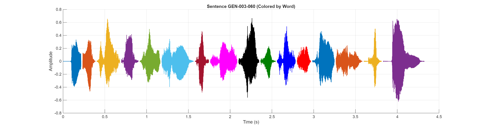

Sentence Audio:
Waveform:
| # | ID | Hanji | POJ |
|---|---|---|---|
| 1 | GEN-003-060-0002 | 比 | pí |
| 2 | GEN-003-060-0003 | 一 | it |
| 3 | GEN-003-060-0004 | 切 | chhè |
| 4 | GEN-003-060-0005 | 的 | ê |
| 5 | GEN-003-060-0006 | 精 | cheng |
| 6 | GEN-003-060-0007 | 牲 | siⁿ, |
| 7 | GEN-003-060-0008 | 及 | kap |
| 8 | GEN-003-060-0009 | 山 | soaⁿ |
| 9 | GEN-003-060-0010 | 野 | iá |
| 10 | GEN-003-060-0011 | 一 | it |
| 11 | GEN-003-060-0012 | 切 | chhè |
| 12 | GEN-003-060-0013 | 的 | ê |
| 13 | GEN-003-060-0014 | 走 | cháu |
| 14 | GEN-003-060-0015 | 獸 | siù, |
| 15 | GEN-003-060-0016 | 卡 | khah |
| 16 | GEN-003-060-0017 | 重 | tāng; |